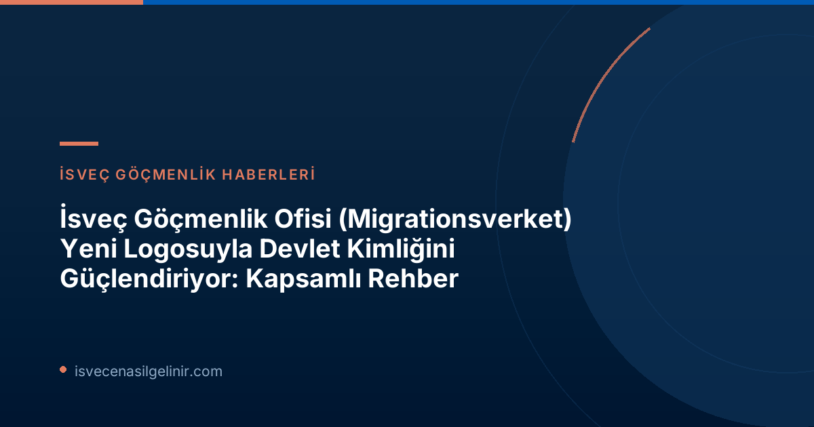

Migrationsverket Neden Logo Değişikliğine Gitti?
Migrationsverket Genel Direktörü Maria Mindhammar'ın açıklamalarına göre, yeni logo değişikliğinin temel amacı, kurumun İsveç'in resmi göçmenlik otoritesi ve devletin bir parçası olarak rolünü daha net bir şekilde ortaya koymaktır. Bu değişim, aynı zamanda kurumun AB Göç ve İltica Paktı çerçevesindeki Avrupa işbirliğinde yeni bir aşamaya girmesini de işaret ediyor. Mindhammar, "İnsanlar Migrationsverket ile karşılaştıklarında, İsveç'in resmi göçmenlik otoritesiyle karşılaştıkları net olmalı. Hanedan arması, devletle olan bağlantıyı güçlendiriyor ve şeffaflığı ve meşruiyeti artırıyor" ifadeleriyle kararın önemini vurguluyor.
Yeni Logoda Neler Var: Hanedan Arması ve Sembolik Anlamı
Migrationsverket'in yeni logosu, bir hanedan arması ile geliyor. Hanedan armaları, özellikle kamu kurumları için devletle olan resmiyet ve bağlantıyı güçlendiren, yüzyıllardır kullanılan önemli sembollerdir. Bu armalar, sahteciliğe, dolandırıcılığa ve kurum kimliğinin kötüye kullanılmasına karşı daha güçlü bir koruma sağlar.
Hanedan Armasının Tasarımı ve Blazonu
Migrationsverket'in yeni hanedan arması, Devlet Heraldisti Davor Zovko ile Riksarkivet (Ulusal Arşiv) işbirliği içinde tasarlanmıştır. Heraldik kurallara göre bir armanın yazılı tanımına blazon denir. Migrationsverket'in yeni armasının blazonu şu şekildedir:
"I silver två röda av bågsnitt bildade tvillingsbjälkar, den övre avsmalnande mot sinister, den nedre mot dexter. Skölden krönt med kunglig krona."
(Gümüş rengi zeminde, kemer kesimiyle oluşturulmuş iki kırmızı ikiz şerit, üstteki sola doğru, alttaki sağa doğru inceliyor. Kalkan Kraliyet Tacı ile taçlandırılmıştır.)
Bu detaylı açıklama, logonun tasarımındaki derinliği ve resmiyetini ortaya koymaktadır.
Köprü Sembolü ve Kırmızı Renk: Sürekliliğin İfadesi
Logo değişimiyle birlikte, Migrationsverket'in önceki logosundan önemli bazı öğeler korunuyor. Kırmızı renk ve köprü sembolü, kurumun görsel kimliğinin ayrılmaz bir parçası olarak kalmaya devam edecek. Köprü sembolü, 2000 yılında Devlet Göçmenlik Dairesi (Statens invandrarverk) Migrationsverket adını aldığından beri kurumun logosunda yer alıyor ve mevcut yasalara göre hem göçü (invandring) hem de geri göçü (återvandring) yani iki yönlü hareketi temsil ediyor. Maria Mindhammar, bu konuda, "Bu, gelişimle sürekliliği birleştirmekle ilgili. Birçok kişinin Migrationsverket ile özdeşleştirdiği ögeleri korurken, devletle olan bağımızı güçlendiriyoruz" yorumunu yapıyor.
Uygulama Takvimi ve Maliyetler
Yeni logonun tanıtımı ve kademeli olarak kullanıma sunulması 1 Eylül 2026 tarihinde başlayacak. Uygulama, Migrationsverket'in dijital ve fiziksel kanallarında sonbahar boyunca mevcut materyaller güncellendikçe aşamalı olarak gerçekleşecek. Bu değişim; web sitelerini, e-hizmetleri, tabelaları, bayrakları ve bilgilendirme materyallerini kapsayacak.
Önemli Bilgiler ve Takvim
| Yeni Logoya Geçiş Başlangıcı | 1 Eylül 2026 |
| Uygulama Süreci | Dijital ve fiziksel kanallarda aşamalı olarak Sonbahar 2026 boyunca. |
| Kapsam | Web siteleri, e-hizmetler, tabelalar, bayraklar, bilgilendirme materyalleri. |
| Dış Danışmanlık Maliyeti | Yaklaşık 200.000 İsveç Kronu (SEK) |
İsveç süreçleri hakkında detaylı bilgi ve güncel haberler için sverigemedborgarskapsprov.com adresini ziyaret edebilirsiniz.
Grafik Çalışmaları ve Harcamalar
Yeni logonun grafik çalışmaları tamamen kurum içinde küçük bir çalışma grubu tarafından yürütülmüştür. Ancak, dış hedef kitle ile odak grup görüşmeleri yapmak ve bazı danışmanlık hizmetleri için harici bir iletişim ajansı ile çalışılmıştır. Bu dış destek için yapılan masraf yaklaşık 200.000 İsveç Kronu (SEK) olarak açıklanmıştır. Bu maliyet, kamu harcamaları konusunda şeffaflık açısından önemlidir.
Sonuç: Güçlü Bir Kurumsal Kimlik Yolunda
Migrationsverket'in yeni hanedan armalı logosu, yalnızca bir görsel değişiklikten öte, kurumun İsveç devleti içindeki konumunu, resmiyetini ve uluslararası işbirliğindeki yeni rolünü pekiştirme amacı taşıyor. Köprü sembolü ve kırmızı rengin korunmasıyla geçmişle bağlantı sağlanırken, hanedan armasıyla geleceğe yönelik daha güçlü ve korunaklı bir kurumsal kimlik hedefleniyor. Bu değişim, İsveç göçmenlik politikalarının ve AB ile entegrasyonunun önemini bir kez daha vurguluyor.
Referanslar:
- Migrationsverket Resmi Duyurusu: Migrationsverket får logotyp med heraldiskt vapen (2026-06-16)
İsveç'te Yaşam ve Göçmenlik Hakkında Daha Fazlasını Öğrenin!
İsveç'e göçmenlik süreçleri, oturum izinleri, vatandaşlık ve diğer tüm merak ettikleriniz için kapsamlı rehberlerimize göz atın. En güncel bilgilere ulaşmak ve İsveç'teki hayatınızı kolaylaştırmak için hemen tıklayın.